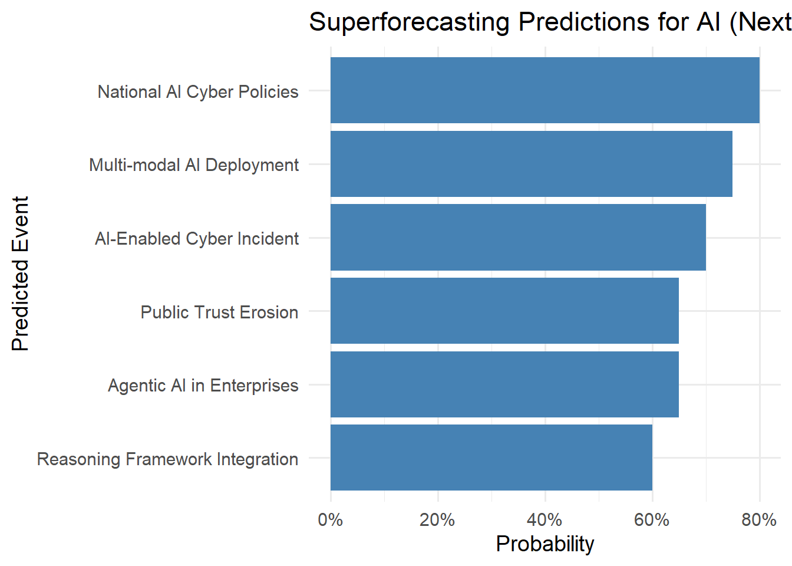
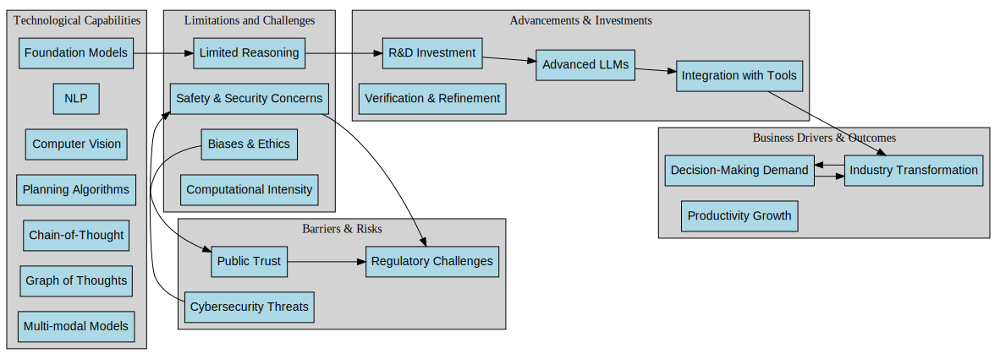

Introduction
The rapid evolution of Artificial Intelligence (AI) presents both transformative opportunities and complex risks.
The 2024 CCAPAC Report on AI and Cybersecurity highlighted how Asia-Pacific economies are at the forefront of AI adoption while also being exposed to new forms of cyber risk.
At the same time, advances in AI capabilities—from foundation models to reasoning techniques like Chain-of-Thought and Graph of Thoughts—are pushing the frontier of what AI systems can achieve.
To explore the near-term future of AI, this article merges insights from the CCAPAC report with a causal graph of technological capabilities, limitations, advancements, business drivers, and risks. Using superforecasting methods, we derive probabilistic predictions for where the field will be in the next 12 months.
The Causal Graph: Capabilities and Challenges
The graph maps out interdependencies between:
- Technological Capabilities (e.g., Foundation Models, NLP, Computer Vision, Planning Algorithms, Multi-modal Models)
- Limitations and Challenges (e.g., limited reasoning, safety/security concerns, biases, computational intensity)
- Advancements and Investments (e.g., research, autonomous agents, new frameworks, verification methods, integration with external tools)
- Business Drivers and Outcomes (e.g., industry transformation, demand for decision-making systems, productivity growth)
- Barriers and Risks (e.g., regulation, public trust, cybersecurity threats)
These nodes are connected through edges and feedback loops that highlight virtuous cycles (e.g., industry transformation → demand for better decision-making → stronger agentic AI systems) and vicious cycles (e.g., biases → trust erosion → regulatory pressure).
Key Insights
Reasoning bottleneck
Despite rapid advances in models, limited reasoning capabilities remain a central constraint. Improvements in verification, refinement, and external tool use are crucial to progress.Cybersecurity as systemic risk
AI not only faces risks like data poisoning and model theft but also amplifies cyber threats through deepfakes and automated attacks. These risks reinforce regulatory scrutiny and influence public trust.Feedback-driven acceleration
Loops involving industry transformation and agentic AI adoption suggest that once certain breakthroughs (e.g., reliable planning + tool integration) occur, deployment accelerates across sectors.Investment as a catalyst
Research, supervised fine-tuning, and reinforcement learning are positioned as key accelerators, enabling new frameworks for reasoning and validation.
Superforecasting Predictions (One Year Horizon)
Applying superforecasting methods—base rates, trend extrapolation, and scenario weighting—we can generate probabilistic forecasts for 2025–2026.
1. Foundation Models and Multi-modal AI
- Prediction: A major multi-modal foundation model (vision + text + audio) will achieve broad commercial deployment within 12 months.
- Probability: ~75%
- Reasoning: Trend in GPT-4o, Gemini, and Claude Sonnet suggests rapid multi-modal rollout; compute and R&D investment are aligned.
2. Agentic AI Systems in Industry
- Prediction: At least three Fortune 500 companies will announce production deployment of agentic AI systems (autonomous workflows integrating planning + external tools).
- Probability: ~65%
- Reasoning: Demand for decision-support automation is strong in finance, logistics, and customer service; barriers are trust and reliability.
3. Cybersecurity Threats from AI
- Prediction: A high-profile cyber incident involving generative AI (e.g., deepfake-enabled fraud or AI-powered phishing at scale) will occur in Asia-Pacific.
- Probability: ~70%
- Reasoning: CCAPAC identifies these as immediate risks; attack surface is growing faster than defensive maturity.
4. Regulatory Response
- Prediction: At least two Asia-Pacific governments will update national cybersecurity strategies with explicit AI-focused provisions.
- Probability: ~80%
- Reasoning: Following Singapore, Japan, and South Korea, other APAC nations will move quickly due to both opportunity and risk.
5. Reasoning Breakthroughs
- Prediction: Methods like Tree of Thought (ToT), Graph of Thoughts (GoT), or verification + refinement loops will become standard components of commercial LLM frameworks.
- Probability: ~60%
- Reasoning: Academic prototypes exist; adoption depends on computational cost vs. commercial benefit.
6. Public Trust and Acceptance
- Prediction: Public trust in AI will decline slightly due to visible misuse (deepfakes, biased outputs), even as corporate adoption grows.
- Probability: ~65%
- Reasoning: Trust erosion often lags adoption; governments will respond with stronger ethical and security guidelines.
Implications for Strategy
- For Policymakers: Regulatory agility is key—balancing innovation incentives with strict guardrails for security and ethics.
- For Industry: Invest early in verification, transparency, and explainability to gain trust advantages.
- For Researchers: Focus on reasoning-enhancing methods and secure integration of tools to overcome bottlenecks.

Scenario Analysis: One-Year Outlook
Superforecasting is not only about assigning probabilities but also about imagining plausible scenarios.
Here we outline three contrasting narratives for AI and cybersecurity over the next 12 months.
| Scenario | Description | Likelihood | Implications |
|---|---|---|---|
| Best Case | Breakthroughs in multi-modal and reasoning methods lead to rapid adoption of secure, agentic AI systems. Governments act quickly on regulation, and trust in AI grows. | ~20% | Productivity gains accelerate, Asia-Pacific emerges as a global leader in secure AI deployment. |
| Base Case | AI capabilities (multi-modal + agentic) expand, but cybersecurity incidents and misuse (deepfakes, bias) undermine public trust. Governments update policies reactively. | ~60% | Adoption continues but unevenly, with stricter regulations and selective industry wins. |
| Worst Case | High-profile AI-driven cyberattacks erode trust, regulatory backlash stalls innovation, and reasoning methods fail to mature fast enough. | ~20% | Slowed adoption, fragmented markets, and delayed realization of AI-driven productivity gains. |
The base case remains the most likely, reflecting strong technological progress but tempered by cybersecurity and governance challenges.
Conclusion
The next 12 months will mark a transition period: AI capabilities will accelerate, especially in multi-modality and agentic workflows, but cybersecurity risks and public trust will be the critical limiting factors.
In superforecasting terms:
- Technological breakthroughs are highly probable.
- Cybersecurity incidents are almost inevitable.
- Policy and trust dynamics will determine the pace of sustainable adoption.
The causal graph helps us see that progress is not linear—it emerges from reinforcing loops of capabilities, challenges, and responses. By anticipating these feedbacks, we can better prepare for an AI future that is both powerful and secure.